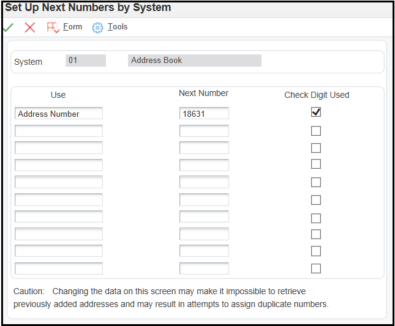

| Purpose |
| Overview of Address Book |
| Scope |
| Details |
| Implementing Address Book |
| Setting Up the JD Edwards EnterpriseOne Address Book System |
| Address Book Constants (P0000) |
| Country Constants (P0070) |
| Address Book User Defined Codes (UDCs) (P0004A) |
| Address Book Category Codes |
| Updating Category Codes |
| Category Code Reporting |
| Address Book Next Numbers (P0002) |
| Address Book Postal Codes (P0117) |
| Audit Log (P0100041, P0100042, P0100043) |
| Additional Address Book Set Up |
| Data Privacy (P01138) |
| Effective Address Dates |
| External Email |
| Address Book Word Search (P01BDWRD, R01BDWRD) |
| High Impact Bugs |
| Enhancement Bugs |
The Address Book system is the foundation for other JD Edwards EnterpriseOne systems. The Address Book system contains name, address, and phone numbers for customers, suppliers, companies, and so on. This information is stored in several database tables to create a central repository of information. Other JD Edwards EnterpriseOne systems retrieve up-to-date name and address information from the Address Book system. For example, the Accounts Payable system uses address book information for supplier payments and the Accounts Receivable system uses address book information to generate customer invoices and statements.
With a central repository of information that integrates with other JD Edwards EnterpriseOne systems, you can effectively manage your address book information. The Address Book system includes:
The following JD Edwards EnterpriseOne systems from Oracle integrate with the JD Edwards EnterpriseOne Address Book system and allow you to do the tasks described:
| System | Task |
|---|---|
| JD Edwards EnterpriseOne Accounts Payable | Set up suppliers and tax entities. |
| JD Edwards EnterpriseOne Accounts Receivable | Set up customers and tax entities. |
| JD Edwards EnterpriseOne General Accounting | Set up companies and business units. |
| JD Edwards EnterpriseOne Job Cost | Set up jobs and assign them to a project manager and superintendent in addition to suppliers and subcontractors. |
| JD Edwards EnterpriseOne Fixed Assets | Set up employees who are responsible for assets and suppliers who provide assets. |
| JD Edwards EnterpriseOne Purchase Order Management | Set up suppliers, buyers, carriers, branch/plants, ship-to addresses, and landed cost suppliers (duty brokers). |
| JD Edwards EnterpriseOne Sales Order Management | Set up ship-to addresses, sold-to addresses, carriers, salespersons, branch/plants, and customer billing instructions. |
| JD Edwards EnterpriseOne Inventory Management | Set up planners, buyers, and branch/plants in the item master record. |
| JD Edwards EnterpriseOne Contract Management | Set up suppliers for progress payments and set up contract logs. |
| JD Edwards EnterpriseOne Contract Billing | Set up architects, customers, owners, and remit-to, alternate bill-to, and send-to addresses. |
| JD Edwards EnterpriseOne Service Billing | Set up employees and customers (for work orders). |
| JD Edwards EnterpriseOne Advanced Pricing | Set up category codes to categorize customers for special pricing. |
| JD Edwards EnterpriseOne Requirements Planning | Set up branch/plants and planners, such as material planners or employees in charge of a product or line. |
| JD Edwards EnterpriseOne Forecasting | Set up hierarchies for forecasting. |
| JD Edwards EnterpriseOne Equipment/Plant Management | Set up employees who are responsible for equipment, suppliers who provide equipment, and employees who are assigned to perform preventive maintenance. |
| JD Edwards EnterpriseOne Work Order Management | Set up customers, managers, originators, and supervisors. |
| JD Edwards EnterpriseOne Service Management | Set up customers and service providers. |
| JD Edwards EnterpriseOne Payroll | Set up employees and the name and address of W2 reporting entities. |
| JD Edwards EnterpriseOne Human Capital Management | Set up participants, beneficiaries, and applicants. |
| JD Edwards EnterpriseOne System user profiles | Set up Address Book records for user names and attach E-mail addresses for each user name. |
| JD Edwards EnterpriseOne Workflow Tools | Set up destination of workflow messages and E-mail addresses for address book records. |
This document describes the initial set up steps for JD Edwards EnterpriseOne Address Book.
This document is intended for users who are setting up and processing address book records in EnterpriseOne.
The following implementation steps are suggested for EnterpriseOne Address Book:
You may also wish to set up:
Before using the Address Book system, you must set up information that the system uses during processing. This information the system for your business needs. If you need to change set up information such as constants, after implementation you need to ensure the changes do not adversely impact the existing records.
The following sections discuss how to set up:
You use the Address Book Constant application (P0000) to establish system basics, such as:
To set up Address Book Constants:
For more details on how to reset Database Caching and Service Cache, refer to Frequently Asked Questions on Caching in EnterpriseOne.
In some instances, clearing the cache as mentioned above has not helped since F0009 is a bootstrap table and is cached with each call object kernel on the Enterprise Server. In such cases, it's advisable that the JDE services must be bounced for the Enterprise Server.You use the Country Constants (P0070) to set up address formats, attention abbreviations and salutation information.

To set up Country Constants:

The table below shows the mailing formats that are shipped with the Address Book system, as well as the items included in each format. If you need more than 16 formats or if a format does not satisfy your business requirements, you must customize your system to accommodate the new formats. Please note that customized formats are not supported by Oracle Global Customer Support.
The country, which is optional for these formats, is entered using the Country Constants Revisions application (P0070).
| Mailing Format | Items Included |
|---|---|
| Format 01 | Mailing Name Address Block Postal Code/City Country (optional) |
| Format 02 | Mailing Name Address Block City State Postal Code Country (optional) |
| Format 03 | Mailing Name Address Block City/Postal Code State Country (optional) |
| Format 04 | Mailing Name Address Block City/State/Postal Code Country (optional) |
| Format 05 | Mailing Name Address Block City State Country (optional) |
| Format 06 | Mailing Name Address Block Postal Code/State/City Country (optional) |
| Format 07 | Mailing Name Address Block City Country (optional) |
| Format 08 | Mailing Name Address Block Postal Code/City/State Country (optional) |
| Format 09 | Mailing Name Address Block City/State Postal Code Country (optional) |
| Format 10 | Mailing Name Address Block City/Postal Code Country (optional) |
| Format 11 | Mailing Name Postal Code/City Address Block Country (optional) |
| Format 12 | Mailing Name Address Block City/State Postal Code Country (optional) |
| Format 13 | Postal Code Mailing Name Address Block City Country (optional) |
| Format 14 | Mailing Name Address Block City County Postal Code Country (optional) |
| Format 15 | Postal Code Address Block City Mailing Name Country (optional) |
| Format 16 | Mailing Name Address Block Postal Code/City Country (optional) |
User Defined Codes (UDCs) are used to categorize data and standardize your data entry. The following UDC tables are used in Address Book, in addition to those listed for Address Book Category Codes below:
Search Type codes classify Address Book records and limit the number of records that the system locates when searching for address book records. Examples include:
- A: Applicant
- C: Customer
- E: Employee
Standard Industrial Classification (SIC) codes can be added to Address Book records. The SIC system is a series of number codes that classify businesses by the types of products or services that they provide. Businesses engaged in the same activity are assigned the same SIC code. The U.S. Department of Commerce and U.S. businesses developed the SIC system. Examples include:
- 0700: Agricultural Services
- 1000: Metal Mining
Salutation Codes represent titles of individuals. Salutations can be used on reports, mailing labels, and so on. Examples include:
- A: Mr.
- B: Mrs.
- C: Ms.
- D: Dr.
Message Type Codes are used to send speed messages to other users. Examples include:
- 1: Asked that you call back.
- 2: Will call again.
- 3: Returned your call.
Language Preference Codes specify the language for documents such as invoices and statements and reports. Before any translations become effective, a Language Code must exist at either the system level or in the user preferences. Examples include:
- DU: Dutch
- E: English
- F: French
Note: It is recommended that a blank default value is used for the standard/domestic language, rather than entering a value. So if English is the standard/domestic language the value blank is used, rather than 'E'.
Credit Rating Codes are provided by Dun & Bradstreet. Examples include:
- BA1: High
- BA2: Good
- BA3: Fair
Credit Rating Codes are provided by Experian. Examples include:
- AAA: Excellent
- BBB: Good
- CCC: Fair
Type Codes identify a Who's Who entry for an Address Book record. Examples include:
- A: Attention name
- B: Billing
- C: Contact name
Contact Type Codes categorize contact names, which are associated with a Who's Who entry, by role or function. Examples include:
- C: Competitor
- D: Decision maker
- I: Influencer
Relation Type Codes indicate the relationship between the Who's Who entry and the name in the Related Person table (F01112). Relation Type Codes also can indicate the role or function of an individual.
Electronic Address Type Codes indicate whether an electronic address is a personal address, such as an email address, or an internet address, such as a Uniform Resource Locator (URL).
It is possible to exclude words from the Word search table by entering the unwanted words in UDC 01/SW. All words residing in UDC 01/SW are excluded from the search of the Word Search Master table. Excluding frequently used words and numbers that are common to most records makes the search more useful and concise. See Additional Setup section below for further information on Word Search.
Person / Corporation Code (TAXC) - UDC H00/TA
This code designates the type of taxpayer an entity is. The UDC should contain a blank value as well as the following valid codes:
- C
- P
- N
- 0
- 1
- 2
- 3
- 4
- 5
Credit Messages notify you of a credit status for a particular Address Book record. Examples include:
- B: Bad credit risk
- 1: Over credit limit
- 2: Requires purchase order
State and Province Codes represent states or provinces and can be up to three characters. Examples include:
- BC: British Columbia
- CO: Colorado
- DC: District of Columbia
- IL: Illinois
The Word Search feature can be set up to bypass special characters by adding them to Description 01 or Description 02 of UDC H95/SC. Any special character in this UDC is bypassed when using the Word Search feature to locate Address Book records. The special characters are also removed when searching by Alpha Name field from the header of Work With Addresses (P01012). Whenever an Address Book record is saved, the system will generate the Description Compressed (ABDC) by removing all special characters from the Alpha Name and it will save it in the Address Book Master (F0101). Then the searches are made over the Description Compressed. The Word Search feature does not enable entire words to be bypassed. See Address Book Word Search (P01BDWRD, R01BDWRD) section below for further information on Word Search.
Country Codes can contain up to three characters. Examples include:
- AU: Australia
- BE: Belgium
- CN: China
Category Codes are a type of User Defined Code (UDC) that you can customize to manage the tracking and reporting requirements of your business. You use Category Codes to organize address book information and standardize data entry. For example: categorize your suppliers by the types of products they supply by using Category Codes 23 to store supplier product information. The following category codes can be set up in the Address Book system:
| Category Code | Use |
|---|---|
|
Address Book Category Codes (UDC 01/01-30) |
The Address Book system contains predefined Category Codes. The Category Code descriptions can be modified, but the product code and type code cannot be changed. For example, you can change the description of UDC table 01/23 from A/B Selection Code 23 to Supplier Products. You use the Address Book Revision program (P01012) to assign category codes to Address Book records. You can define up to 30 address book category codes in UDC table 01/01-01/30. When you set up Address Book Category Codes, it may be advisable to create a blank value in the UDC table. Blank could be the default for the most commonly used value.
Note: JD Edwards EnterpriseOne reserves category code 07 for 1099 reporting in the Accounts Payable system.
|
| Who's Who Category Codes (UDC 01/W0 - 01/WT) | Who's Who is a list of individuals that you associate with an Address Book record. For example, when you enter an Address Book record for a customer, you might want to identify individuals who work for that company. These individuals are not assigned an address book number but are associated with their company's Address Book number through the Who's Who list. When you set up a Who's Who Category Code, you can assign the Category Code to all who's who entries, if applicable. You can define up to 10 category codes for who's who in UDC table 01/WO - 01/WT. |
| Contact Information Category Codes (UDC 01/N1 - 01NA) | Contact information is additional information that you can assign to a Who's Who record. When you set up a Category Code for contact information, you can assign the Category Code to all contact entries, if applicable. You can define up to 10 category codes for contact information in UDC table 01/N1-NA. |
| Related Person Category Codes (UDC 01/P1 - 01/P5) | Related persons are individuals who are associated with an individual on a Who's Who record. For example, a related person might be the spouse of a Who's Who entry. When you set up a Category Codes for a related person, you can assign the Category Code to all related person entries, if applicable. You can define up to five category codes for related person information in UDC table 01/P1-P5. |
To set up category code UDC values, follow the steps above 'To set up UDC tables'.
To assign category code values to address book records see the Entering Address Book record section of the Address Book Implementation guide on the Oracle Technology Network.
After you enter your address book records, you might need to change category code information. To make changes throughout the Address Book system, run the Global Category Code Update program (R01490). You can update all address book records with the category codes that you changed or you can update specific address book records and category codes.
If you choose to update only specific records, use a processing option to identify which address book records to update for each category code or leave the processing option blank and use data selection to choose which records to update.
Set a processing option to create a report that shows the changed records. Otherwise, the system sends a message about the completion of the batch through workflow.
The following reports can be used for category code reporting purposes:
Further information on these reports can be found in the JD Edwards EnterpriseOne Applications Financial Management Reports Guide, Chapter 2 JD Edwards EnterpriseOne Address Book Reports.
Next numbers (NN) are used to assign numbers to address book records, based on an automatic numbering system, and to specify whether to assign check digits for a type of next number
The Address Book (AN8) field can by updated automatically from Next Numbers (P0002, System 01), manually entered through Address Book Batch Upload (R01010Z), or manually assigned when entering a new Address Book record. If issues are encountered with the way an address book number is defaulting into a field, or if the long address book number is displayed when using the visual assist, the Address Book Constants may not have been defined correctly.
To set up Next Numbers:

If you have many Address Book records to enter, you can speed up data entry by setting up postal codes (zip codes). Once the setup is complete, it is no longer necessary to enter certain information when entering an Address Book record. You simply enter the postal code, and the system will default the city, state, and country.
Rather than manually entering postal (zip) code information, JD Edwards EnterpriseOne recommends that you obtain a tape from the U.S. Postal Service called Zip Code Revisions. You can create a custom program or use a database utility to upload zip code information to the EnterpriseOne Postal Code Transactions table (F0117). The system stores the postal codes in the Postal Codes (F0017) and Postal Code Address (F0118) tables.
System Setup
To activate Postal Code functionality, the following Address Book Revisions (P01012) Processing Options need to be set up:
With processing option setup for Postal Code Editing if the user tabs out after entering the Postal code the City, Country, County, State information will be populated only if there is a single entry for a particular postal code in the P0117 application (F0117).
If the user needs to have multiple entries in the P0117 application and wants to be automatically prompted with the multiple entries as user tabs out after entering the Postal code then the processing option Postal Code address retrieval should be set to 1 and a corresponding entry made within the P0118 Postal Code addresses application (F0118) for each of the respective Postal Code, City and County information in F0117. Note this will only work (user is prompted with P0118S) if the address lines 1 through 4 are left blank in P01012. The address lines can then be populated after postal code is managed.
Example is:
15010 PA Beaver Falls
15010 PA Patterson Heights
15010 PA Racine
The workaround to handle multiple entries is if the user tabs out after entering the Postal code and the City, Country, County, State information are not populated then use the Postal code Visual Assist, this will launch P0117S, enter the Postal code in the QBE (query-by-example), click Find, and select the appropriate row. This will populate the City, Country, County, State information into the P01012.
The audit log is used to record additions and changes to address book records.
Outbound Processing is a method of writing information from JD Edwards EnterpriseOne systems into a Z-table. JD Edwards EnterpriseOne Address Book has three tables that are used for interoperability (inbound and outbound processing).
By activating a processing option in the associated Master Business Function (MBF), additions and changes to Address Book information are entered into the related Z-table. Additionally, a copy of the Address Book record before changes can be created, providing both a "before" and "after" image of the record. Then, using the report writing tool, a custom report can be designed to print the information required for individual business tracking purposes.
Tables for Address Book Interoperability with associated Master Business Function:
It is suggested to specify the Transaction Types that are applicable for each Outbound processing under the "Audit Log (P0100041, P0100042, P0100043)" section in order to avoid confusion:
System Setup
There are two processing options in each of the above MBFs:
A version of the various MBFs must be designated in the processing option of the associated entry program:
There are several further set up tasks you may wish to consider for Address Book, depending on your EnterpriseOne release and your business requirements:
The Address Book Data Security feature enables you to restrict users from viewing sensitive Address Book information. This functionality is available as of 8.11. After performing the required setup for this feature, secured users will be able to see the secured fields, but these fields are populated with asterisks. These fields are also disabled so no changes can be made.
Data security can be setup for the following fields:
See How to Set Up Address Book Data Privacy (P01138) for further information.
When the effective date option is enabled in Address Book Constants (P0000), multiple addresses can be stored for the same Address Book number. This is useful for maintaining the correct mailing address when an organization is in process of changing locations.
Follow the steps below to enable Effective Address Date functionality:
Versions Xe to 8.10:
An External Mail option from the Tools Exit Bar within the Work Center (P012503) is used to establish a link between the user signed into JD Edwards EnterpriseOne and the user's external e-mail address. This allows the user to send e-mail messages without having to exit JD Edwards EnterpriseOne, as well as receive e-mail notification for all JD Edwards EnterpriseOne jobs. In addition to sending messages to the Work Center, messages will be sent to the user's e-mail address. Users can also access e-mail from the Work Center.
To use this feature, set up the following:
Note: The External Mail button has no relation to the e-mail address of any Address Book record except that of the user signed on.
As of release 8.11 base the external email functionality via the Tools row exit is no longer available. For more details see Bug 10846880.
For releases older than 8.11 the External Email option is available but is no longer supported.
See Document 1206873.1 E1: WRKFLW: External Mail Setup for Releases 8.9 and Later for further information.
Storing E-mail Addresses for Other Address Book Records
To store the e-mail addresses for other Address Book records, enter the address in the Who's Who Remark field (Remark1) (P0111). The Remark field can handle up to 40 characters of free-form text. Who's Who can be accessed from the row menu for Address Book Revisions (P01012).
Email addresses can also be stored in the Email/Internet Revisions (P01111) application using the Row Exit from the Who's Who application (P0111). Prior to release 8.11, this field was call 'Electronic Address'.
The Word Search Build Program (P01BDWRD) allows users to search on any information stored in Address Book tables. The Word Search Build UBE (R01BDWRD) must be run to build the Address Book Word Search Master table (F01815). Data selection can be used to perform additional updates to the tables. If data selection is not used, the program will reprocess all records in this table.
The Word Search Build UBE (R01BDWRD) updates the Address Book Word Search Master table (F01815). This table enables users to query Address Book records using text strings. All records that share the text string information are displayed. For example, a search for zip code of 8012* will return all records where the first 4 digits of the zip code match the numbers 8012.
The R01BDWRD has processing options to specify what category of information will be updated into the Address Book Word Search Master table (F01815). The processing options are the following:
R01BDWRD Processing Options
Select tab
It is possible to exclude words from the Word Search table by entering the unwanted words in User Defined Code (UDC) table 01/SW. All words residing in UDC 01/SW are excluded from the search of the Word Search Master table. Excluding frequently used words and numbers that are common to most records makes the search more useful and concise.
You can direct the Word Search feature to bypass special characters by adding them to UDC table H95/SC. Any special characters in this table are bypassed whenever you use the Word Search feature to locate Address Book records. The Word Search feature does not enable you to bypass entire words.
As of release Xe, Bug 10729883 - increased the performance time frame by only updating the AB Word Search Master (F01815). The Address Book Search Word Occurrence table (F01816) is no longer used in release Xe and above.
As of release 8.12 BUG: 10954922 : B0100009 NEED CHANGES - changed the function that parses the Description Compressed was changed to consider characters in Description 02 of UDC H95/SC in addition to Description 01.
The Word Search Build UBE was modified in release B733.2 to increase performance. The UBE was changed from R01800 to R01BDWRD. When the UBE was enhanced for performance purposes, the ability to use data selection was affected. Data selection for R01BDWRD is available in release Xe. If data selection is used at the B733.2 release level, R01800 must be used instead of R01BDWRD.
Note: See FAQ Address Book Setup - FAQ Frequently Asked Questions on Address Book Set Up (P0000, P0007, P0004A, P0002, P0117, P0100041, P0100042, P0100043, P01138, P95922, P01BDWRD, R01BDWRD) for further information on Address Book Set Up.